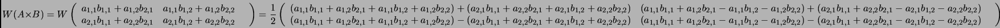
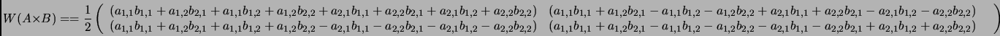

Next:
What is
Up:
A example
Previous:
Wavelet Transform of two
Product of A and B in wavelet space
The conventional product of A and B can be transformed into wavelet space. The results of this matrix transform is as follows:


Daniel Beatty 2003-06-03